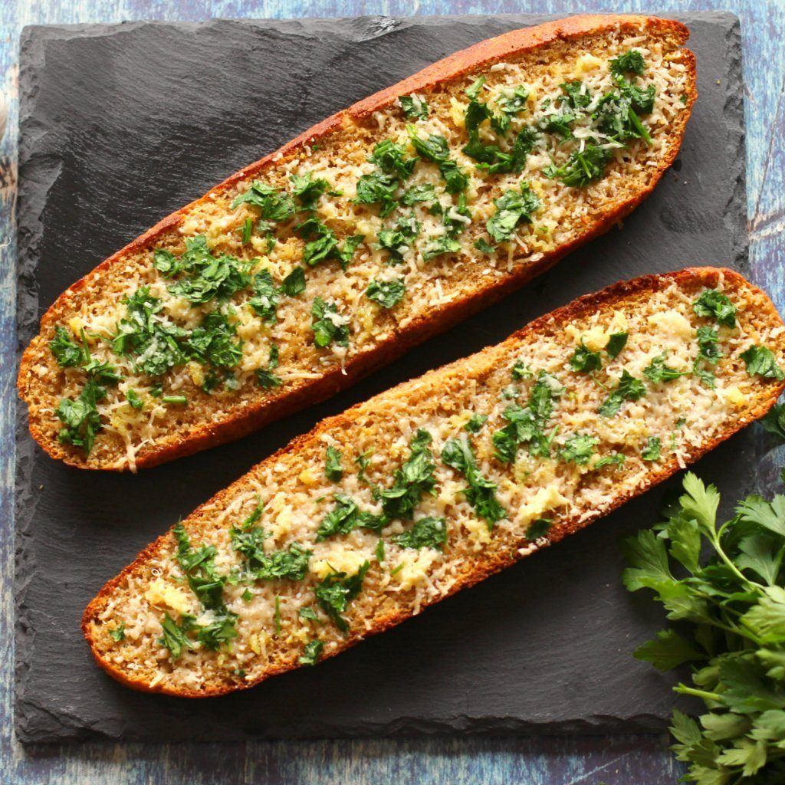

Potato Salad

This garlic bread recipe with cheese is ultra buttery and garlicky, plus,
it couldn’t be simpler to make and it’s exactly what you need on the side of a big bowl of pasta!
Ingridients
-
4 cloves garlic , peeled and minced or pressed
-
1/2 cup salted butter , softened
-
1/4 cup extra virgin olive oil
-
1/4 cup grated Parmigiano Reggiano
-
1/4 cup fresh chopped parsley
-
1/2 teaspoon kosher salt
-
1 loaf Italian or French bread
Steps
-
Preheat the oven to 450°F.
-
In a small bowl, mix the pressed garlic with the softened butter,
olive oil, grated Parmesan, parsley, and kosher salt until smooth.
-
Add the celery and the green onions to the potato mixture.
Chop 4 of the hard boiled eggs and add to the potato mixture.
-
Cut the bread in half lengthwise and spread each cut side with the garlic butter.
Place the two piece on a baking sheet or directly on an oven rack, cut side up, and
bake until toasted, about 8-10 minutes. Remove from the oven and cut into 2-inch pieces,
and serve warm.
Back to Home Page